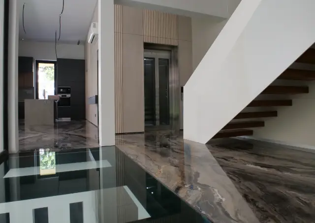
Projects项目案例
Lifts we have installed, grouped by lift type.我们安装过的电梯，按类型分类。
Home lifts家用电梯
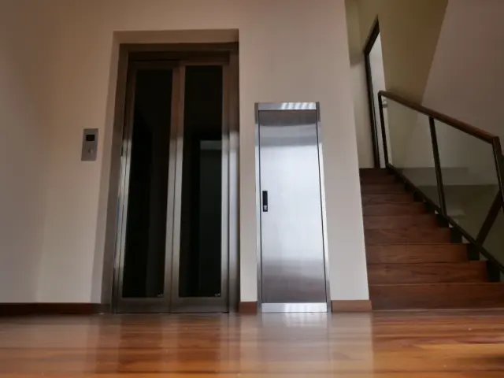
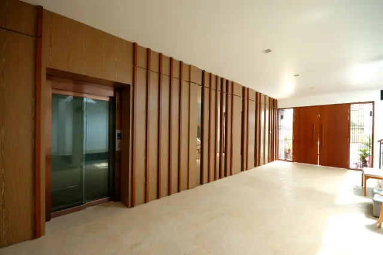
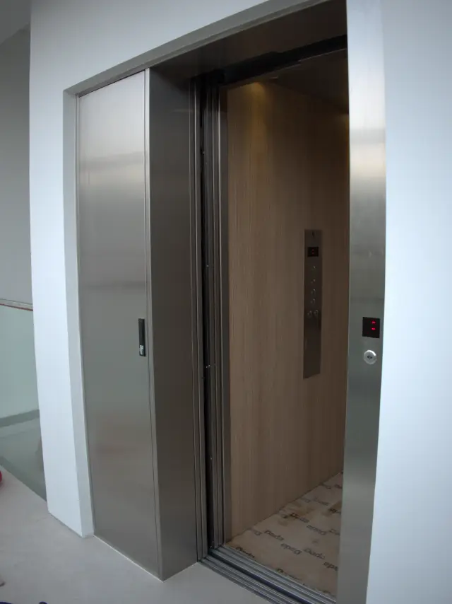
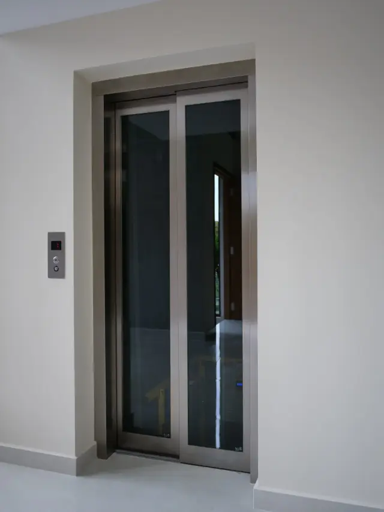
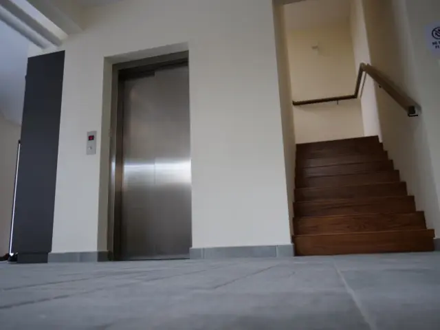
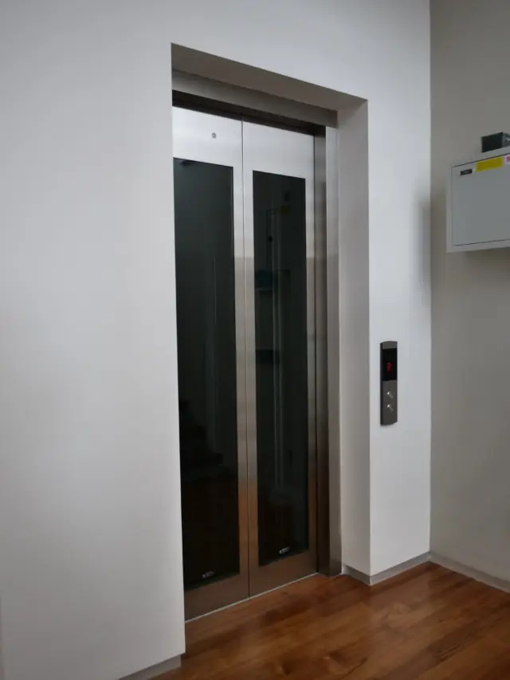
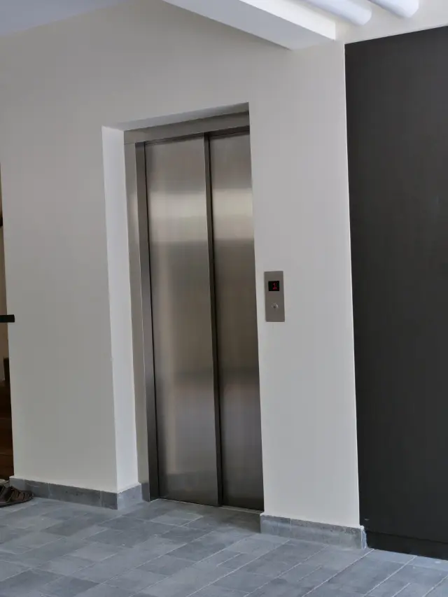
Glass and circular lifts玻璃及圆形电梯
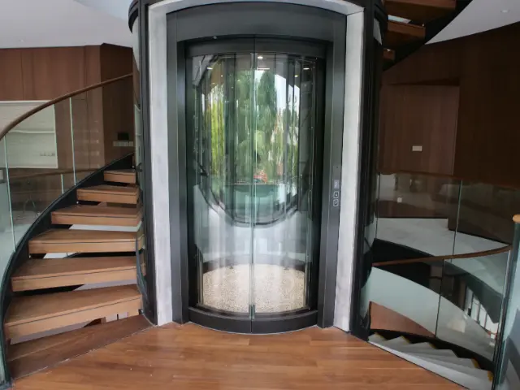
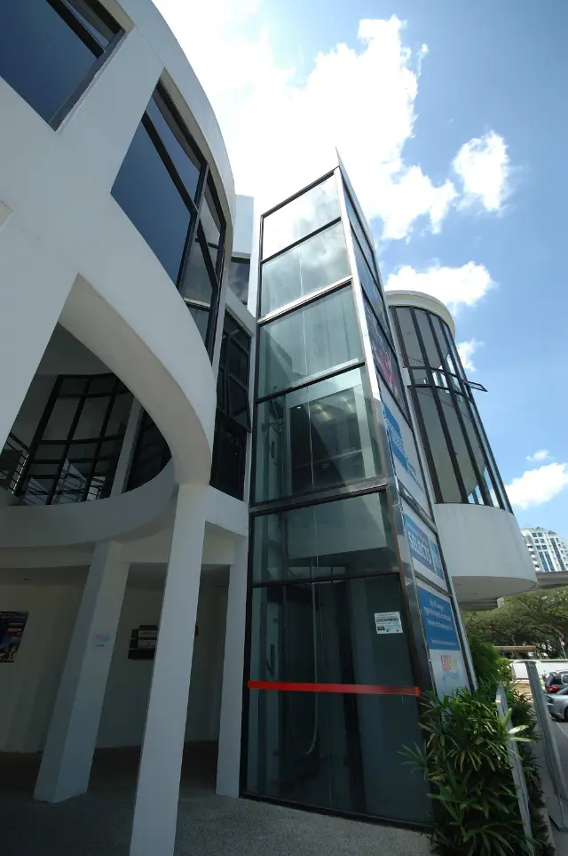
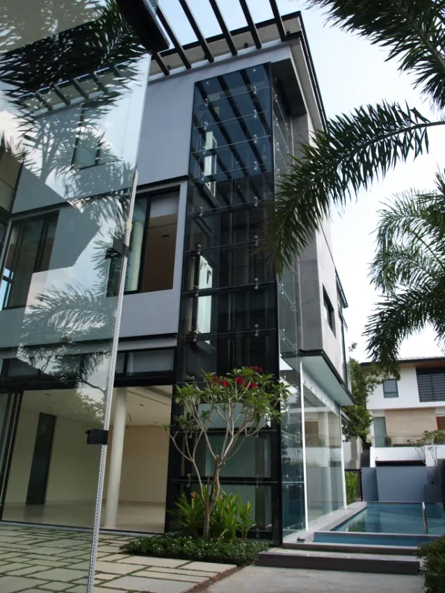
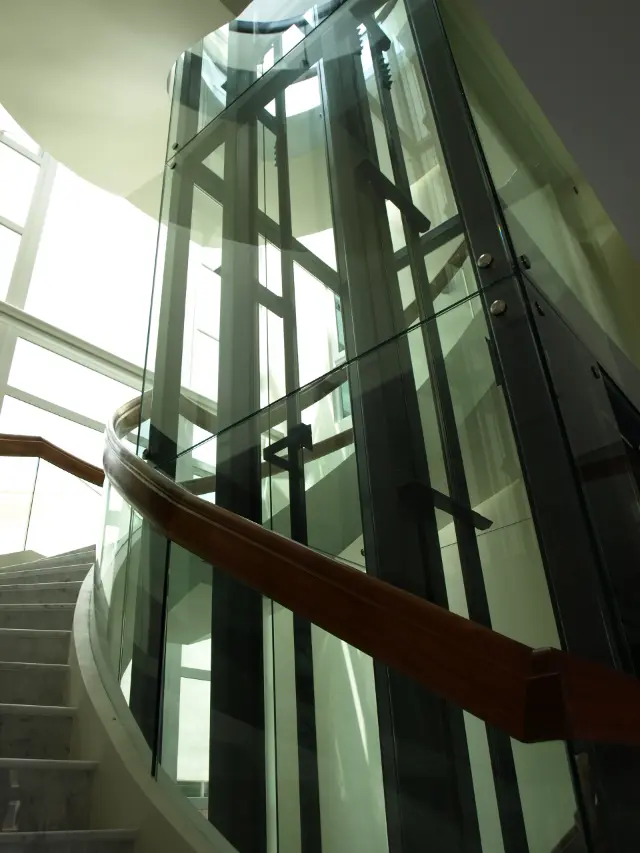
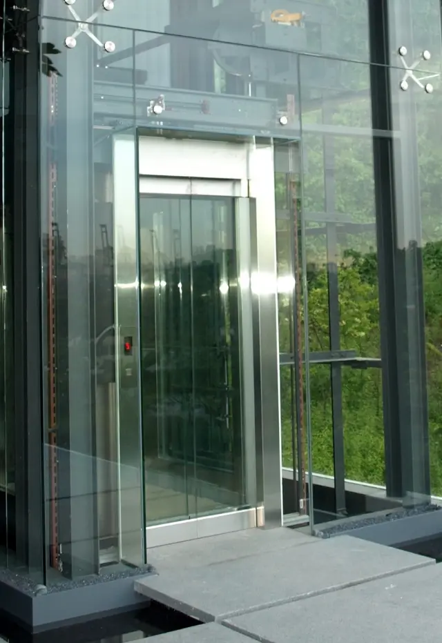
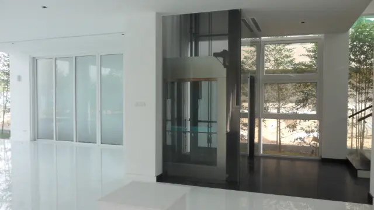
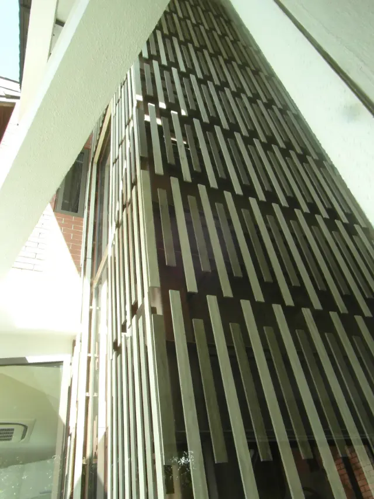
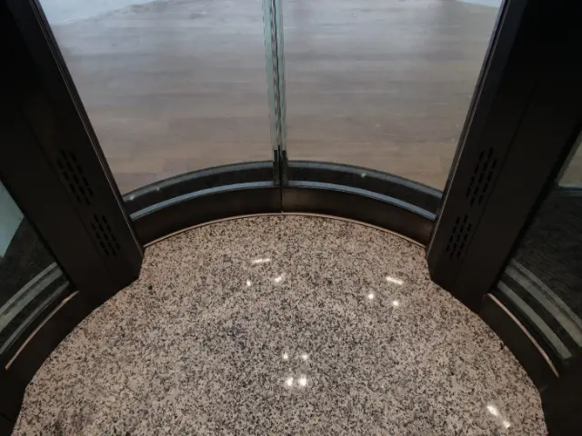
Passenger lifts客梯

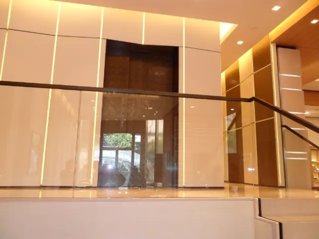
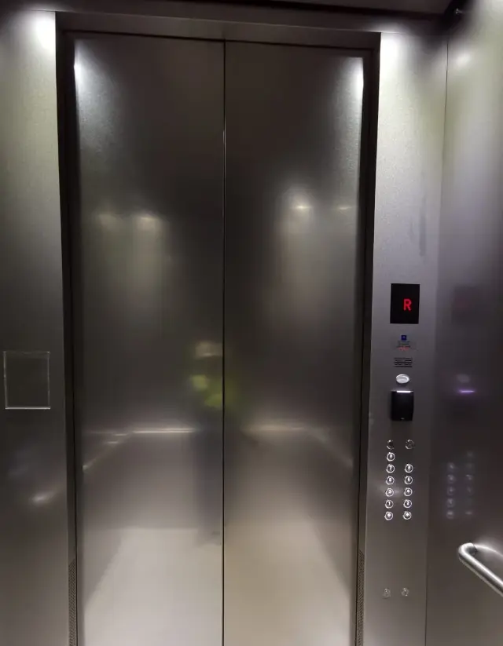
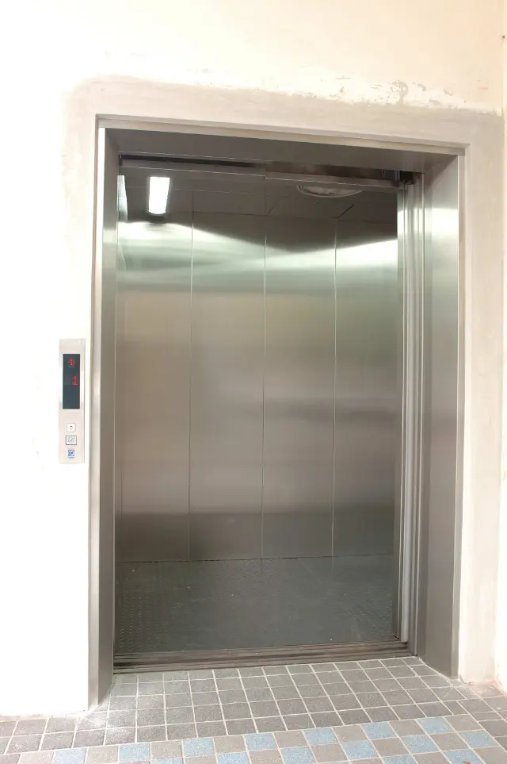
Cargo lifts货梯
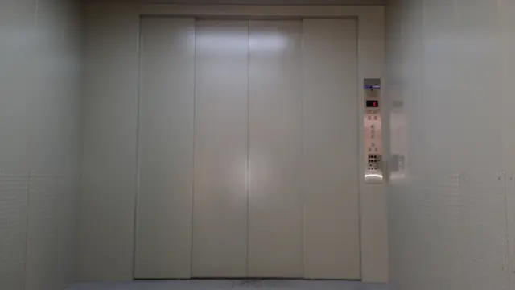
Custom finishing定制装饰
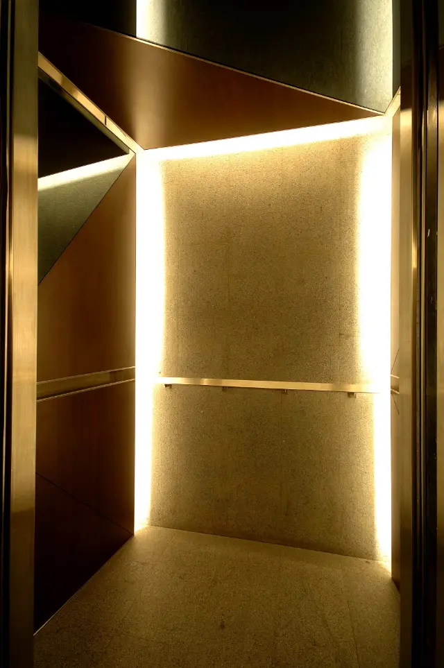
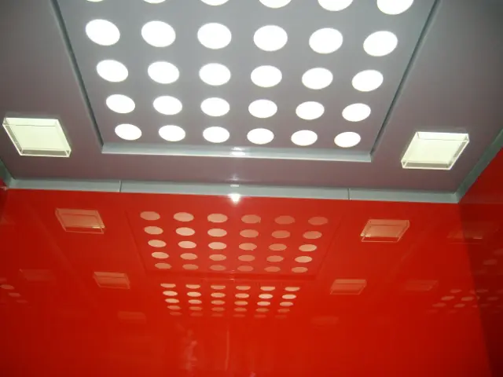
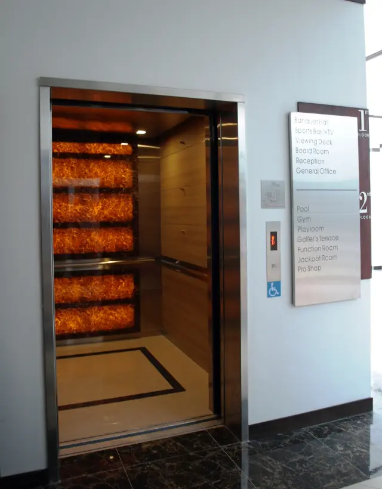
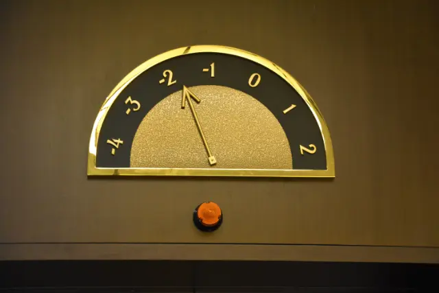
Tell us about your lift.告诉我们您的电梯情况。
A call is the quickest way to start. We'll ask a few questions about the building and the floors.打个电话是最快的开始方式。我们会了解一下建筑和楼层的情况。